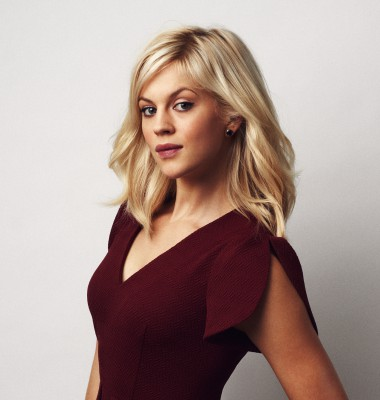
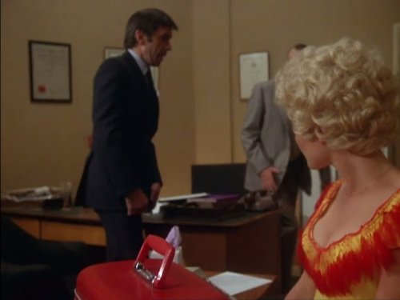

#1135 Zwei an einem Tag
Alternativ: One Day

 IMDB-Wertung: 7.0 / 10
IMDB-Wertung: 7.0 / 10  Metascore: 48
Metascore: 48 
Der 15. Juli ist das magische Datum, das die schicksalhafte Beziehung von Emma und Dexter prägt. Nicht einmal, sondern immer wieder: Alles beginnt mit einer gemeinsamen Nacht nach der Examensfeier am 15. Juli 1988. Doch die zurückhaltende Emma und der draufgängerische Dexter verfolgen unterschiedliche Lebensziele. Am nächsten Morgen trennen sich ihre Wege, um sich in den drauffolgenden Jahren immer wieder zu kreuzen. Und trotz aller räumlicher Entfernung, persönlicher Höhen und Tiefen, verlieren sich Emma und Dexter nie ganz aus den Augen, bis sie 20 Jahre nach ihrer ersten Nacht endlich erkennen, was sie immer gesucht haben...
Jahr: 2011
Dauer: 107 Minuten
FSK: 12
Land: USA Studio: Focus FeaturesTonspuren: DTS - ,
Untertitel:
Auflösung: 1080p (1920x816) Größe: 7618 MB
Genre: Drama, Liebe
Regisseur: Lone Scherfig
Drehbuch: David Nicholls, David Nicholls
Soundtrack: Rachel Portman
Darsteller:
 Anne Hathaway als Emma
Anne Hathaway als Emma Jim Sturgess als Dexter
Jim Sturgess als Dexter- Tom Mison als Callum
 Jodie Whittaker als Tilly
Jodie Whittaker als Tilly Rafe Spall als Ian
Rafe Spall als Ian Joséphine de La Baume als Marie
Joséphine de La Baume als Marie Patricia Clarkson als Alison
Patricia Clarkson als Alison Ken Stott als Steven
Ken Stott als Steven- Heida Reed als Ingrid
 David Ajala als Floor Manager
David Ajala als Floor Manager-  Georgia King als Suki
- Ukweli Roach als Rapper
 Clara Paget als Cocktail Waitress
Clara Paget als Cocktail Waitress Matt Berry als Aaron
Matt Berry als Aaron Romola Garai als Sylvie
Romola Garai als Sylvie Matthew Beard als Murray Cope
Matthew Beard als Murray Cope Thomas Arnold als Colin
Thomas Arnold als Colin Phoebe Fox als Nightclub Girl
Phoebe Fox als Nightclub Girl Emilia Jones als Jasmine, 2007 and 2011
Emilia Jones als Jasmine, 2007 and 2011 Greg Bennett als Parent , uncredited
Greg Bennett als Parent , uncredited- Mike Binder als Dexter's agent , uncredited
 Bern Collaco als Teacher , uncredited
Bern Collaco als Teacher , uncredited- Seelan Gunaseelan als Businessman , uncredited
- Natalie Hallam als Ian's Wife , uncredited
 John Samuel Kande als Basketball Star , uncredited
John Samuel Kande als Basketball Star , uncredited- Sarah Jane O'Neill als Lady , uncredited
- Belle Williams als Girl in Restaurant , uncredited
- Tim Key als Customer
- Amanda Fairbank-Hynes als Tara
- Gil Alma als Waiter
- Lorna Gayle als Mrs. Major
- Diana Kent als Mrs. Cope
-  James Laurenson als Mr. Cope
- Toby Regbo als Samuel Cope
- Eden Mengelgrein als Jasmine, 2001
- Kayla Mengelgrein als Jasmine, 2001
- Sienna Poppy-Rodgers als Teenager on Eurostar
- Sébastien Dupuis als Jean-Pierre
- Maisie Fishbourne als Jasmine, 2005
- Joanna Ampil als Waitress
- Augustina Amoa als Parent , uncredited
- John Hiorns als Swimmer , uncredited
- Vander McLeod als Business Man , uncredited
- Chloe Page als School child , uncredited
- Caroline Royce als Nightclub Girl , uncredited
Datei: X:\2011(N-Z)\Zwei an einem Tag (2011, FSK12, 1920x816).mkv seit 22.05.2015
Festplatte: HD 2011(G-Z)
 Es gibt insgesamt 132 Filme in der Gruppe '2011(N-Z)'
Es gibt insgesamt 132 Filme in der Gruppe '2011(N-Z)'